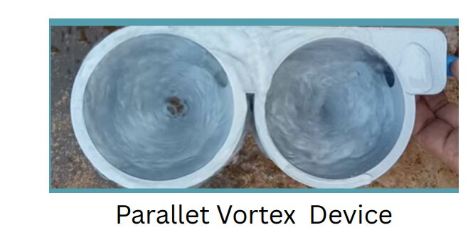

Aadya Kanchan
I am a high school student in Bengaluru. Most of what I build starts with something I watched going wrong: a tap with nothing coming out of it, rain pooling around a drain instead of going into it, a blood test that takes a lab and a day. Each of these pages is the build story of one project — the prototypes, the parts, the things that burned or buckled, and what I changed afterwards.
AquaFlux
A passive, vortex-driven insert that drops into an existing surface drain and speeds up how fast it swallows water — no power, no moving parts. I did field studies at two waterlogging sites, compared 30+ geometries in ANSYS, filled a lab record with sketches and calculations, 3D-printed the shortlist, and tested it at different rainfall intensities and turbidity levels.

The printed parallel vortex device, before a water test.
NIRI
A plug-in water conservation device that fits onto an existing tap or pipeline. It went through six iterations in three years: the first one was an OLED screen and a buzzer whose wires burned during my demo, and the blocking mechanism made a complete U-turn from relays and a potentiometer to a servo-driven gear system turning a ball valve. I stress-tested it, then installed it in a school canteen, homes and hospitals.

The gear-and-ball-valve assembly on the bench.
Arogya Dx
A point-of-care lipid screening setup that tries to read a sample optically instead of chemically. A PDMS microfluidic chip sits inside a light-isolated chamber with an RGB sensor and an 18-channel spectral sensor, and I compared the spectral signatures of five lipid-analog concentrations and then of two real plasma samples. It is exploratory work, not a diagnostic device.

Building and testing the optical setup.
Groundwater mapping in Bangarpet
A GIS study of how groundwater levels in a drought-prone town near Bengaluru shift between the pre- and post-monsoon seasons, and where recharge is actually worth investing in. I built a recharge potential index in ArcGIS from eight weighted thematic layers.

The recharge potential zonation map for Bangarpet Taluk.